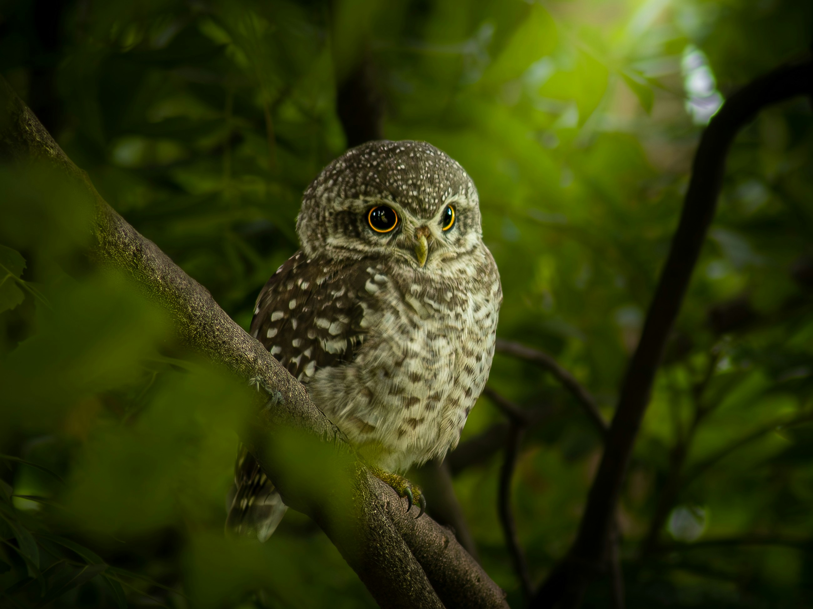

The Jungle Owlet is a small woodland owl with a rounded head, barred brown-and-white plumage, and yellow eyes. Unlike many owls, it can be active during daylight, especially around dawn and dusk. It hunts insects, small reptiles, rodents, and birds and usually remains within wooded habitats. Its calls can be heard from forest edges and dense vegetation.